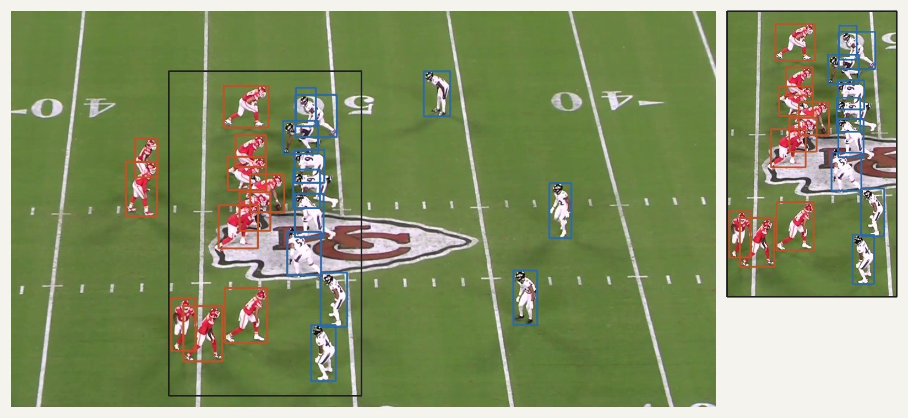
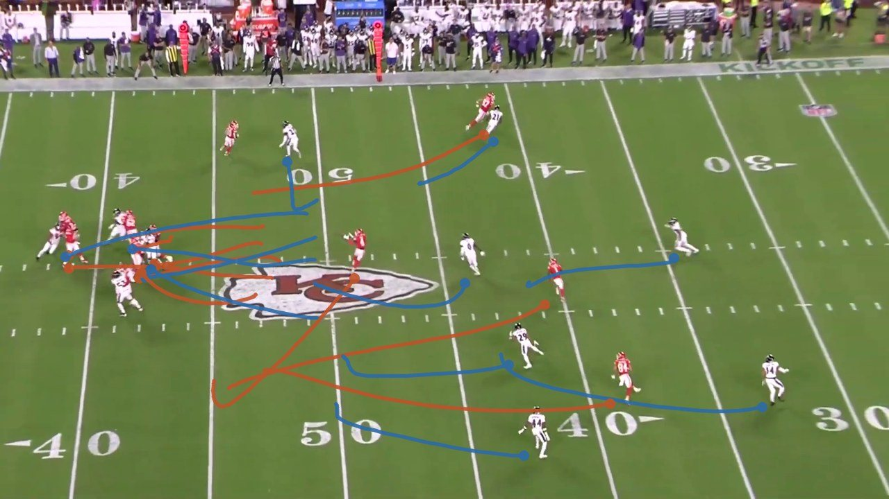
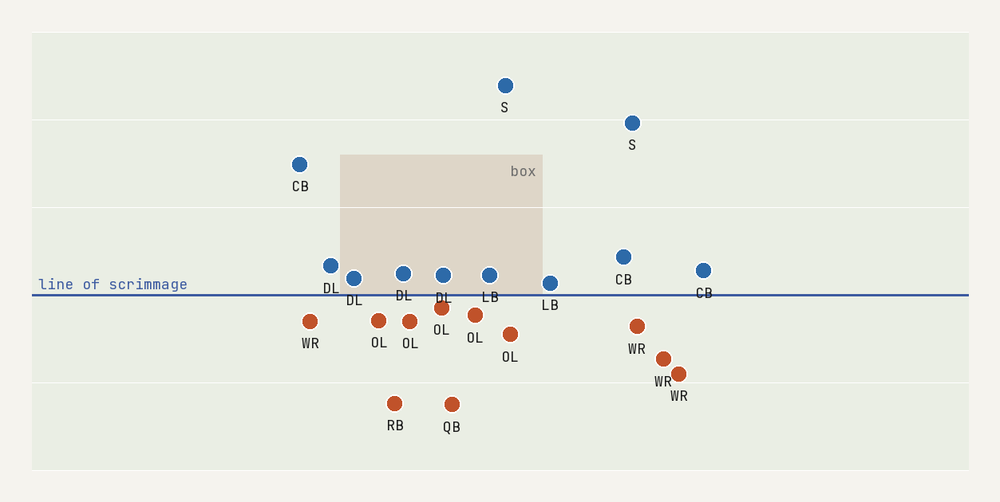
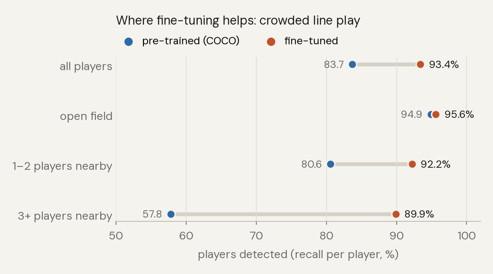

NFLVision
From football video to player-tracking data, and from tracking data to live analytics: every player detected, followed and placed on the field in yards, ten times per second.
The problem
Player-tracking data is the raw material of modern football analytics, but it only exists for the games and seasons someone has chosen to release. Video exists for everything. NFLVision turns ordinary game footage into tracking data (the position of all 22 players in field yards, ten times per second, with team, role, speed and direction) and then does something with it.
The live board
Tracking data is only interesting for what you can do with it. Each panel of the board above is a small analysis running on the tracks, frame by frame:
- Pocket: area enclosed by the five offensive linemen and the quarterback. Here it opens to 26 yd² and collapses to 4.8 yd² at +3.5 s.
- Pressure: distance from the quarterback to the nearest defender; one is inside 3 yd at +2.4 s, two by +3.2 s.
- Receiver separation: yards from each receiver to the nearest defender, with the most open one marked at every instant.
- Space control: for every point of the field, which team gets there first.
- Speed and formation: fastest player (19.2 mph on a deep route); at the snap, shotgun 3×1, four in the box, a 1-high shell.
The ball is not tracked, so the board says nothing about where the pass went. Everything else comes from the players.
How it works
- Plays & shotscut detection; camera angle from the geometry of the painted lines
- DetectionRF-DETR transformer fine-tuned to find players, not officials
- Field registrationyard lines, hash marks and yard numbers read → homography per frame
- Trackingin field yards, team by jersey colour, smoothed at 10 Hz
- Play contextsnap, line of scrimmage, offense and the role of all 22
- Analyticspocket, pressure, separation, space, speed, formation
Training the detector
The only neural network in the pipeline is the player detector: an RF-DETR transformer, pre-trained on everyday photos and fine-tuned to find football players from the high All-22 camera, including the ones buried in the line, while ignoring officials and the sideline.
- Data: ~4,000 frames of All-22 video and ~85,000 labelled player boxes, one class.
- Schedule: 10 epochs at 560 px, about two hours on a single consumer GPU (AMD, ROCm).
- Validation: mAP@50 from 0.715 after one epoch to 0.775; training and validation on separate stretches of footage.
- Where it helps: with three or more players around, detection goes from 57.8% to 89.9%.
Selected results
Measured on held-out video against reference tracking, player by player and frame by frame:
- Field registration held through the whole play in 100% of plays.
- Tracking: median position error 0.56 yd, speed 0.20 yd/s, direction 4.8°; 98.5% of players covered by a track.
- Team by jersey colour: 97.2% correct. Snap within ±0.2 s: 92%. Line of scrimmage within 1 yd: 93%.
- Roles at the snap (QB, OL, WR, TE, RB, DL, LB, CB, S): 85.6%; quarterback 95%.
- Clip to play matching from yard numbers read on the field: 97.4%.
What is next
Route classification (hitch, out, go, post…) and coverage on top of the tracks, and keeping a single identity for each lineman through a pile-up.





